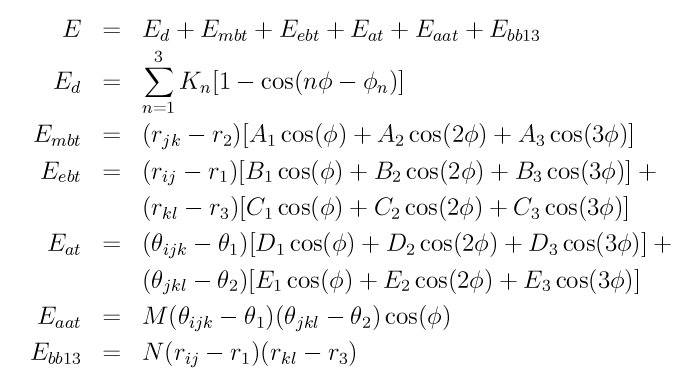

dihedral_style class2 command¶
dihedral_style class2/omp command¶
Syntax¶
dihedral_style class2
Examples¶
dihedral_style class2 dihedral_coeff 1 100 75 100 70 80 60 dihedral_coeff * mbt 3.5945 0.1704 -0.5490 1.5228 dihedral_coeff * ebt 0.3417 0.3264 -0.9036 0.1368 0.0 -0.8080 1.0119 1.1010 dihedral_coeff 2 at 0.0 -0.1850 -0.7963 -2.0220 0.0 -0.3991 110.2453 105.1270 dihedral_coeff * aat -13.5271 110.2453 105.1270 dihedral_coeff * bb13 0.0 1.0119 1.1010
Description¶
The class2 dihedral style uses the potential
where Ed is the dihedral term, Embt is a middle-bond-torsion term, Eebt is an end-bond-torsion term, Eat is an angle-torsion term, Eaat is an angle-angle-torsion term, and Ebb13 is a bond-bond-13 term.
Theta1 and theta2 are equilibrium angles and r1 r2 r3 are equilibrium bond lengths.
See (Sun) for a description of the COMPASS class2 force field.
Coefficients for the Ed, Embt, Eebt, Eat, Eaat, and Ebb13 formulas must be defined for each dihedral type via the dihedral_coeff command as in the example above, or in the data file or restart files read by the read_data or read_restart commands.
These are the 6 coefficients for the Ed formula:
K1 (energy)
phi1 (degrees)
K2 (energy)
phi2 (degrees)
K3 (energy)
phi3 (degrees)
For the Embt formula, each line in a dihedral_coeff command in the input script lists 5 coefficients, the first of which is “mbt” to indicate they are MiddleBondTorsion coefficients. In a data file, these coefficients should be listed under a “MiddleBondTorsion Coeffs” heading and you must leave out the “mbt”, i.e. only list 4 coefficients after the dihedral type.
mbt
A1 (energy/distance)
A2 (energy/distance)
A3 (energy/distance)
r2 (distance)
For the Eebt formula, each line in a dihedral_coeff command in the input script lists 9 coefficients, the first of which is “ebt” to indicate they are EndBondTorsion coefficients. In a data file, these coefficients should be listed under a “EndBondTorsion Coeffs” heading and you must leave out the “ebt”, i.e. only list 8 coefficients after the dihedral type.
ebt
B1 (energy/distance)
B2 (energy/distance)
B3 (energy/distance)
C1 (energy/distance)
C2 (energy/distance)
C3 (energy/distance)
r1 (distance)
r3 (distance)
For the Eat formula, each line in a dihedral_coeff command in the input script lists 9 coefficients, the first of which is “at” to indicate they are AngleTorsion coefficients. In a data file, these coefficients should be listed under a “AngleTorsion Coeffs” heading and you must leave out the “at”, i.e. only list 8 coefficients after the dihedral type.
at
D1 (energy/radian)
D2 (energy/radian)
D3 (energy/radian)
E1 (energy/radian)
E2 (energy/radian)
E3 (energy/radian)
theta1 (degrees)
theta2 (degrees)
Theta1 and theta2 are specified in degrees, but LAMMPS converts them to radians internally; hence the units of D and E are in energy/radian.
For the Eaat formula, each line in a dihedral_coeff command in the input script lists 4 coefficients, the first of which is “aat” to indicate they are AngleAngleTorsion coefficients. In a data file, these coefficients should be listed under a “AngleAngleTorsion Coeffs” heading and you must leave out the “aat”, i.e. only list 3 coefficients after the dihedral type.
aat
M (energy/radian^2)
theta1 (degrees)
theta2 (degrees)
Theta1 and theta2 are specified in degrees, but LAMMPS converts them to radians internally; hence the units of M are in energy/radian^2.
For the Ebb13 formula, each line in a dihedral_coeff command in the input script lists 4 coefficients, the first of which is “bb13” to indicate they are BondBond13 coefficients. In a data file, these coefficients should be listed under a “BondBond13 Coeffs” heading and you must leave out the “bb13”, i.e. only list 3 coefficients after the dihedral type.
bb13
N (energy/distance^2)
r1 (distance)
r3 (distance)
Styles with a cuda, gpu, omp, or opt suffix are functionally the same as the corresponding style without the suffix. They have been optimized to run faster, depending on your available hardware, as discussed in Section_accelerate of the manual. The accelerated styles take the same arguments and should produce the same results, except for round-off and precision issues.
These accelerated styles are part of the USER-CUDA, GPU, USER-OMP and OPT packages, respectively. They are only enabled if LAMMPS was built with those packages. See the Making LAMMPS section for more info.
You can specify the accelerated styles explicitly in your input script by including their suffix, or you can use the -suffix command-line switch when you invoke LAMMPS, or you can use the suffix command in your input script.
See Section_accelerate of the manual for more instructions on how to use the accelerated styles effectively.
Restrictions¶
This dihedral style can only be used if LAMMPS was built with the CLASS2 package. See the Making LAMMPS section for more info on packages.